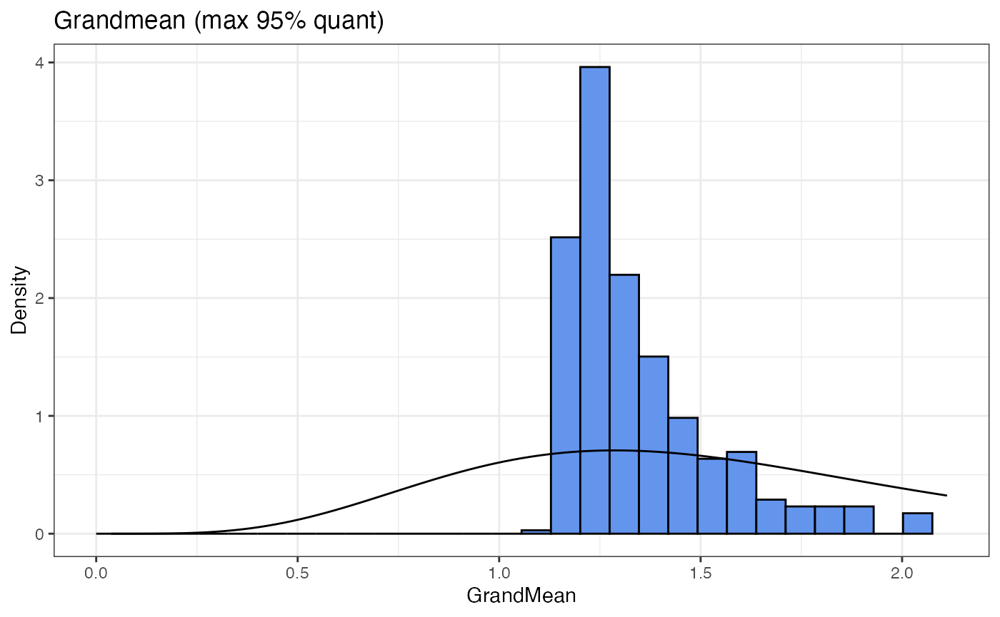
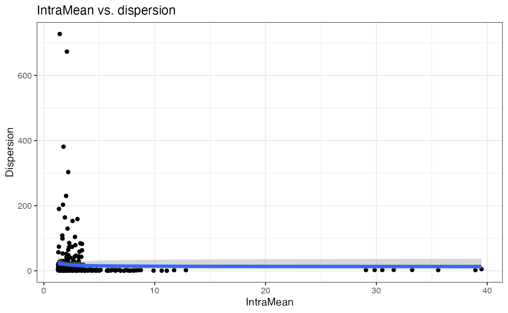

GEEutils: reproducing the pseudoreplication paper by Zimmerman et al.
Jeroen Gilis
09/01/2020
Source:vignettes/Zimmerman_vignette.Rmd
Zimmerman_vignette.RmdHere I reproduce the analysis strategies of the publication by Zimmerman et al.; Pseudoreplication bias in single-cell studies; a practical solution. See also their associated GitHub page.
More specifically, I have included three functions in GEEutils:
getNoCor: Only retain a select number of genes from a scRNA-Seq expression matrix that are not correlate to one anothergetSimulationParameters: Obtain hyperparameters describing an input scRNA-Seq datasetsimulator: Simulate synthetic scRNA-Seq data based on hyperparameters obtained from a reference scRNA-Seq dataset withgetSimulationParameters
Note that this code is almost identical to the one presented by Zimmerman et al. However, these authors assessed their methods only different types of scRNA-Seq data, i.e., Fluidigm’s C1 protocol and the smartseq2 protocol. I will here work with the 10X Kang dataset. This has strong repercussions on the validity of the proposed methods. Therefore, adaptations must certainly be made in the future.
devtools::install_local("/Users/jg/Desktop/PhD/GEE/GEEutils", force=TRUE, quiet = FALSE)Loading the Kang data from ExperimentHub
eh <- ExperimentHub()
(sce <- eh[["EH2259"]])
#> class: SingleCellExperiment
#> dim: 35635 29065
#> metadata(0):
#> assays(1): counts
#> rownames(35635): MIR1302-10 FAM138A ... MT-ND6 MT-CYB
#> rowData names(2): ENSEMBL SYMBOL
#> colnames(29065): AAACATACAATGCC-1 AAACATACATTTCC-1 ... TTTGCATGGTTTGG-1
#> TTTGCATGTCTTAC-1
#> colData names(5): ind stim cluster cell multiplets
#> reducedDimNames(1): TSNE
#> altExpNames(0):Data preprocessing
# remove multiplets
sce <- sce[, sce$multiplets == "singlet" & !is.na(sce$cell)]
# Arrange colData
colData(sce) %>%
as.data.frame %>%
transmute(
group_id = stim,
patient_id = ind,
sample_id = paste0(stim, ind),
cluster_id = cell) %>%
mutate_all(as.factor) %>%
set_rownames(colnames(sce)) %>%
DataFrame -> colData(sce)
# remove undetected genes
sce[rowSums(counts(sce) > 0) > 0, ]
#> class: SingleCellExperiment
#> dim: 18464 24673
#> metadata(0):
#> assays(1): counts
#> rownames(18464): RP11-34P13.8 AL627309.1 ... S100B PRMT2
#> rowData names(2): ENSEMBL SYMBOL
#> colnames(24673): AAACATACATTTCC-1 AAACATACCAGAAA-1 ... TTTGCATGGGACGA-1
#> TTTGCATGTCTTAC-1
#> colData names(4): group_id patient_id sample_id cluster_id
#> reducedDimNames(1): TSNE
#> altExpNames(0):
# calculate quality control (QC) metrics
sce <- addPerCellQC(sce)
# get cells w/ few/many detected genes
sce$is_outlier <- isOutlier(
metric = sce$detected,
nmads = 2, type = "both", log = TRUE)
# remove outlier cells
sce <- sce[, !sce$is_outlier]
dim(sce)
#> [1] 35635 22221
# remove lowly expressed genes & normalize
sce <- sce[rowSums(counts(sce) > 1) >= 10, ]
sizeFactors(sce) <- librarySizeFactors(sce)
sce <- logNormCounts(sce)Take data from a single celltype in a single treatment arm (but for multiple individuals) and only 1 cell type. Filter features again.
sce <- sce[,sce$group_id == "ctrl"]
sce <- sce[,sce$cluster_id=="CD14+ Monocytes"]
(sce <- sce[rowSums(counts(sce) > 1) >= 50, ])
#> class: SingleCellExperiment
#> dim: 991 2214
#> metadata(0):
#> assays(2): counts logcounts
#> rownames(991): ISG15 AURKAIP1 ... CSTB SUMO3
#> rowData names(2): ENSEMBL SYMBOL
#> colnames(2214): AAACATACATTTCC-1 AAACATACCAGAAA-1 ... TTTCGAACTTGCTT-1
#> TTTGACTGTTACCT-1
#> colData names(9): group_id patient_id ... is_outlier sizeFactor
#> reducedDimNames(1): TSNE
#> altExpNames(0):Run a tSNE plot
GEEutils::runDimRed(object=sceNoCor,
clustering = "patient_id",
type = "TSNE",
downsample = FALSE)
Assess intra- and inter-individual correlation with boxplots
gg <- GEEutils::correlationsBoxplot(object = sceNoCor,
clustering = "patient_id")
#> Function still under construction
ggGet the simulation hyperparameters
SimulationParameters <- GEEutils::getSimulationParameters(object = sceNoCor,
clustering = "patient_id",
plot = TRUE,
verbose = TRUE)
#> Summary statistics
#> Hyperparameters dropout
#> `stat_bin()` using `bins = 30`. Pick better value with `binwidth`.
#> Hyperparameters grand mean#> `stat_bin()` using `bins = 30`. Pick better value with `binwidth`.#> `stat_bin()` using `bins = 30`. Pick better value with `binwidth`.
#> Warning: Removed 25 rows containing non-finite values (stat_bin).
#> Warning: Removed 2 rows containing missing values (geom_bar).
#> Hyperparameters realtionship 1
#> Warning: Removed 36 rows containing non-finite values (stat_smooth).
#> Warning: Removed 36 rows containing missing values (geom_point).
#> Hyperparameters realtionship 2
#> Warning: Removed 18 rows containing non-finite values (stat_smooth).
#> Warning: Removed 18 rows containing missing values (geom_point).
#> Combine all hyperparameters
SimulationParameters
#> $drop.shape
#> [1] 4.101524
#>
#> $drop.rate
#> [1] 12.17911
#>
#> $drop.beta0
#> [1] 0.01257415
#>
#> $drop.beta1
#> [1] 0.1895456
#>
#> $drop.beta2
#> [1] -0.1819284
#>
#> $grandmean.shape
#> [1] 3.470282
#>
#> $grandmean.rate
#> [1] 2.056208
#>
#> $grandmean_interSD.beta1
#> [1] 0.1215916
#>
#> $intraSD_dispersion.beta0
#> [1] 2.762912
#>
#> $intraSD_dispersion.beta1
#> [1] 0.5880615
# SimulationParameters <- GEEutils::getSimulationParameters(object = sce,
# clustering = "patient_id",
# plot = TRUE,
# verbose = TRUE)
# SimulationParametersPrepare to simulate new data
ncells.group1 <- c(136, 176, 644, 315 ) # exact same cell numbers per individual
ncells.group2 <- c(86, 314, 292, 251) # exact same cell numbers per individual
# ncells.group1 <- rep(200, 5) # 5 patients with 200 cells in group 1
# ncells.group2 <- rep(200, 5) # 5 patients with 200 cells in group 2
ncells <- c(ncells.group1, ncells.group2)
cluster <- paste0("patient_",1:8) # 10 patients in total
group <- rep(c("group1", "group2"), each=4)
design <- as.data.frame(cbind(cluster, group, ncells))
design$cluster <- as.factor(design$cluster)
design$group <- as.factor(design$group)
design$ncells <- as.numeric(design$ncells)
nGenes <- nrow(sce)
distribution <- "poisson" # alternative is NB
fractionDGE <- 0
foldchange <- 1
# fractionDGE <- .1
# foldchange <- 1.5
sum(ncells)
#> [1] 2214Simulate new data
# simulate from poisson
simulatedData_pois <- GEEutils::simulator(design = design,
SimulationParameters = SimulationParameters,
nGenes = nGenes,
distribution = distribution,
fractionDGE = fractionDGE,
foldchange = foldchange)
simulatedData_pois[1:5,1:5]
#> Cell_1 Cell_2 Cell_3 Cell_4 Cell_5
#> Gene_1 0 7 9 0 0
#> Gene_2 1 3 0 2 2
#> Gene_3 4 0 0 0 0
#> Gene_4 2 3 0 0 0
#> Gene_5 0 0 0 0 0
# set.seed(55)
# simulatedData_NB <- GEEutils::simulator(design = design,
# SimulationParameters = SimulationParameters,
# nGenes = nGenes,
# distribution = distribution,
# fractionDGE = fractionDGE,
# foldchange = foldchange)
#
# simulatedData_NB[1:5,1:5]
#
# sum(is.na(simulatedData_NB))
# simulatedData_NB[is.na(simulatedData_NB)] <- 0 # not nice, resolve laterMake a countSimQC report of new data
## original dataset
ids <- as.data.frame(cbind(colnames(sce), sce$patient_id))
colnames(ids) <- c("CellID", "IndividualID")
dds1 <- DESeqDataSetFromMatrix(countData = assay(sce),
colData = ids,
design= ~ IndividualID)
## dataset without gene correlations
ids <- as.data.frame(cbind(colnames(sceNoCor), sce$patient_id))
colnames(ids) <- c("CellID", "IndividualID")
dds2 <- DESeqDataSetFromMatrix(countData = assay(sceNoCor),
colData = ids,
design= ~ IndividualID)
## simulated dataset
cluster <- rep(design$cluster,times=design$ncells)
group <- rep(design$group,times=design$ncells)
designCell <- as.data.frame(cbind(cluster, group))
designCell$cluster <- as.factor(designCell$cluster)
designCell$group <- as.factor(designCell$group)
dds3 <- DESeqDataSetFromMatrix(countData = simulatedData_NB,
colData = designCell,
design= ~ cluster)
dds4 <- DESeqDataSetFromMatrix(countData = simulatedData_pois,
colData = designCell,
design= ~ cluster)
dds_list <- list(dds1, dds2, dds3, dds4)
names(dds_list) <- c("Kang_CD14_filtered", "Kang_CD14_filtered_noCor", "SimulatedData_NB", "SimulatedData_pois")
countsimQCReport(ddsList = dds_list,
outputFile = "countsim_report_kang_simulation.html",
outputDir = getwd(),
outputFormat = "html_document",
calculateStatistics = FALSE,
forceOverwrite = TRUE)